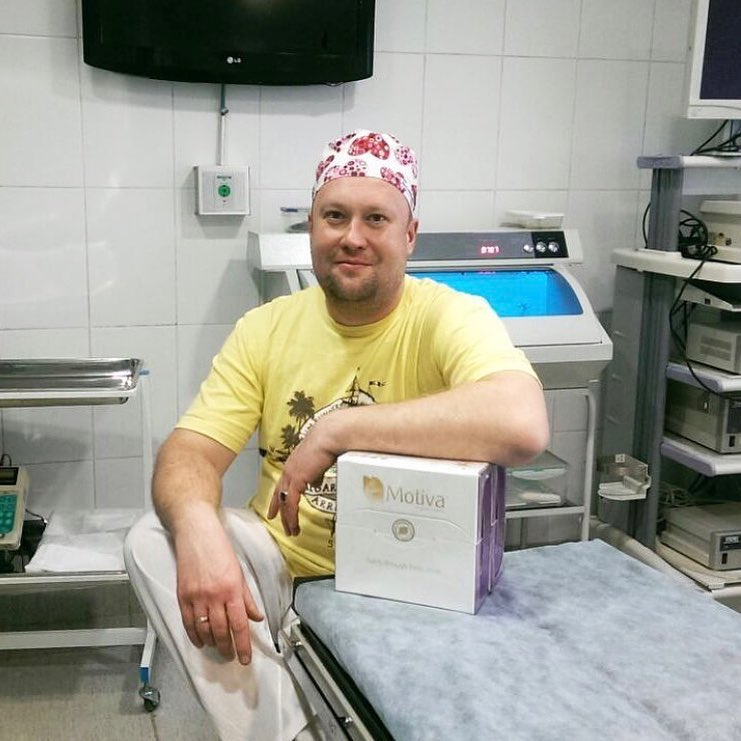
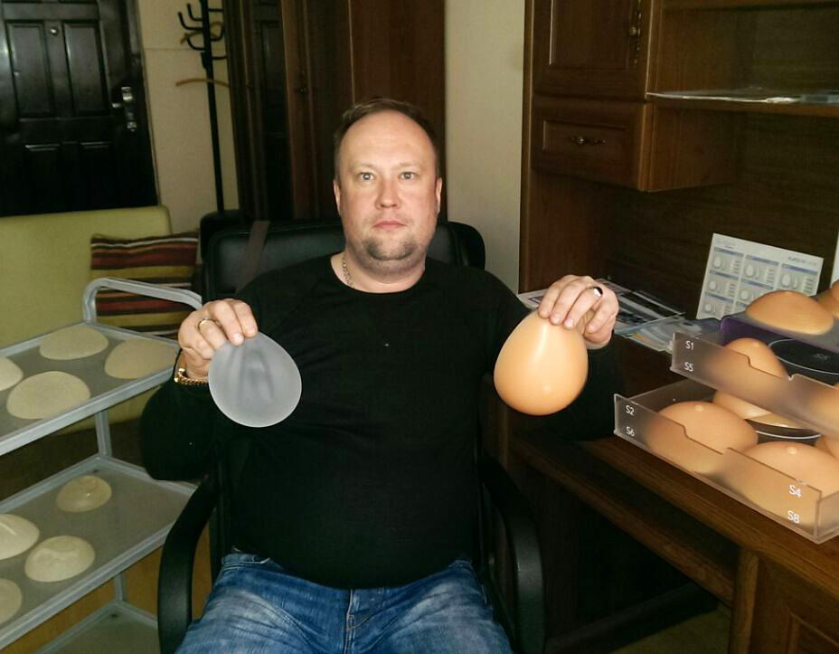

Главное об увеличивающей маммопластике- увеличении груди с помощью имплантов
Основное, что вы должны знать о пластической операции аугментационной маммопластике- увеличении груди имплантами.
Увеличение груди, также известное как маммопластика (аугментационная маммопластика), является операцией по увеличению размера груди. Это включает размещение грудных имплантатов под тканями груди или мышцами грудной клетки.
Для некоторых женщин увеличение груди - это способ чувствовать себя более уверенно. Для других это часть восстановления груди для различных условий.
Если вы думаете об увеличении груди, поговорите с пластическим хирургом. Убедитесь, что вы понимаете, что включает в себя хирургическое вмешательство, включая возможные риски, осложнения и последующее наблюдение, а также период реабилитации.
Выбор имплантов
До недавнего времени пациентке можно было предложить два вида модели имплантов: круглые и анатомические. Каждая модель имплантов призвана решать определенные проблемы с формой груди. Но остается только одна- "замороженность" формы при движении, смене положения тела в пространстве. Т.е. что лежа, что стоя и т.д. форма молочных желез одна и та же и как раз эта не естественность и бросается в глаза.
Например анатомические модели никогда не наполнят декольте в положении лежа, как должно быть, а круглые в положении стоя не будут выглядеть как анатомические.
Долгое время для достижения естейственности молочных желез использовались анатомические модели имплантов различных производителей - MENTOR, EUROSILICONE, ARION, POLYTECH.
Однако не всегда прогнозируемый результат совпадал с желаемым из-за того,что анатомические модели хоть и формируют каплевидную молочную железу, но остается эффект неподвижности груди при смене положения тела. Т.е. что лежа, что стоя молочные железы всегда находятся в одном и том же положении, а сосково-ареолярный комплекс "смотрит" в одном направлении - прямо. В положении лежа, грудь также" стоит", не сдвигается в сторону и вверх. Все это создает для взгляда непонятное ощущение, вроде бы форма естейственная, а нет того "штриха" в портрете, который полностью гармонизирует всю картину.
Также все импланты из-за слабой растяжимости и оболочки и плотного геля приходится ставить через относительно длинный разрез.
Все поменялось после появления разработки компании Motiva, модель называется эргономикс.

Единственная модель которая полностью соответствует требованиям стандарта естественности молочных желез, меняет свою форму в зависимости от положения тела, обладает дополнительным защитным слоем, особой поверхностью которая снижает риск возникновения капсулярной контрактуры Бейкера в несколько раз по сравнению с другими производителями имплантов. Обладает высочайшим запасом прочности оболочки.
Эргономикс - та модель,которая работает по настоящему, подстраивая форму под Ваши движения. Вот чего хотят женщины - безопасности, практичности и естественности, выбирая себе новую форму груди.
Все импланты, которые устанавливаются имеют пожизненную гарантию качества. Что это значит?
Если происходит разрыв импланта не по вине клиента, то производители гарантируют бесплатную поставку имплантов для операции по замене поврежденного импланта.
Подробнее об имплантах в видеоматериале
Как подобрать объем имплантов
Очень часто возникает вопрос: как подобрать нужный объем имплантов и соответственно получить необходимый размер лифа после операции?
Как правило, подходят несколько смежных объемов имплантов. Девушкам бывает сложно определиться и они не могут визуально представить, какой объем имплантов даст тот или иной размер молочных желез.
Для этого компания МОТИВА разработала специальные накладки, которые называются САЙЗЕРЫ. С их помощью еще на этапе консультации можно точно выбрать желаемый размер молочных желез, который будет гармонично сочетаться с пропорциями талии, роста, шириной грудной клетки.

Так что не бойтесь прогадать с размером, приходите на бесплатную консультацию, примеряйте и мы подберем импланты, что подойдут идеально!
ВАЖНО ПОМНИТЬ!!!
Импланты одного объема у разных пациенток будут выглядеть совершенно по-разному. Потому что многое зависит от исходных данных - исходной формы молочной железы, объема грудной клетки, а также расположение молочных желез.
Поэтому нельзя выбрать понравившийся объем и вид имплантов, только посмотрев на фотографии, все решается на консультации.
Методы проведения увеличивающей маммопластики
Операция проводится несколькими методами, в зависимости от того, где будет установлен силиконовый имплант – под мышцу или под молочную железу и от того, где будет сделан разрез: под грудью, по ареоле, в подмышечной впадине.
Рассмотрим, чем отличается установка импланта под мышцу и под железу. Плюсы размещения искусственной груди под мышцей:
1. Импланты меньше контурируют. А это значит, грудь будет выглядеть максимально естественно.
2. Имплант сложнее прощупать, поскольку он покрыт мышцей.
3. Результаты маммографии будут более точными.
4. Если по каким- то причинам, у женщины нет груди, край импланта при установке под мышцу меньше прощупывается, он не обтянут кожей, поэтому имплант остается менее заметен.
5. Длительность операции меньше.
В случае размещения импланта под железой тоже есть преимущества.
1. Снижается риск послеоперационного кровотечения.
2. Меньше болезненных ощущений в послеоперационном периоде.
3. Операцию можно выполнять под местной анестезией.
4. Нет необходимости рассекать мышцу, а значит, она меньше истончается, исключается риск разрыва мышцы и ущемления импланта.
Однако, что бы вы не выбрали, окончательное решение о методе установки будет принимать пластический хирург. А, как показывает практика, лучше делать подмышечную установку.
И в некоторых случаях маммопластика с установкой эндопротеза под молочную железу невозможна. Например, если пациентке была проведена лучевая терапия. После беременности часто встречается истончение ткани молочной железы. Это тоже повод провести увеличение груди, установив имплант под мышцу.
Также следует помнить, что при установке имплантов по мышцу не травмируется молочная железа, а также никак не сказывается на беременность и кормление, грудь останется такой же, что очень важно!
Немного фото в процессе. Сразу после маммопластики на операционном столе. Пациентка пожелала иметь 4 размер груди. И мы это желание осуществили - установлены импланты Мотива, круглые модели сверхвысокого профиля, объемом 650 мл. Первое фото непосредственно перед операцией, из-за йодного раствора может показаться пугающим, но таково закулисье любых медицинских манипуляций. Но главное, результат!
Операция маммопластика проводится по наркозом!!!
Боязнь наркоза
Как показывает практика, многих девушек на пути к груди их мечты останавливает именно страх наркоза! Боязнь тяжело и мучительно отходить, а то и боязнь вовсе не проснуться от аллергии на него. В то время как наркоз — это не агрессия против организма, а средство его защиты от боли и стресса. ⠀ Важно понимать: аллергической реакции, как таковой, на наркоз нет. Есть индивидуальная непереносимость препаратов. И если она есть, врач просто подберет другой вид наркоза, с иным действующим веществом. ⠀ Да, нежелательные реакции организма из-за наркоза возможны. Основная их причина — недостаточное поступление воздуха, которое может возникнуть из-за недосмотра медицинского персонала, или нарушения норм использования препаратов или методик. Сами же используемые препараты не могут причинить настолько необратимый вред. То есть опасны они только в неумелых руках! ⠀ Также, как уже сказано выше, современные анестезиологические препараты не относятся к аллергенным. Поэтому и тяжёлой аллергической реакции, как например, анафилактического шока, бояться не стоит. ⠀ Наши пациентки прекрасно переносят грамотно подобранный наркоз и часто описывают своё состояние, как: «заснула, и через 5 минут проснулась уже с грудью» ⠀ Анестезиолог-реаниматолог именно этот специалист отвечает за Вашу безопасность во время операции и сразу после нее, наблюдая за всеми жизненноважными функциями организма.
Послеоперационный период- ограничения
Необходимость и важность соблюдения ограничений
О компрессионном белье Конечно, никто не хочет париться в нём месяц. Однако, давайте углубимся в те процессы, которые начинают происходить в поврежденных тканях вокруг импланта, в области послеперационной раны. Всё не просто так! ⠀ Любые повреждения тканей организма вызывают ответные реакции - боль, отеки, их рассасывание и рубцевание. Поэтому нужно ждать и создавать условия для заживления. ⠀ Компрессионное белье нужно носить месяц, почему? Да потому что только на 15-20 день вокруг импланта начинает(!) образовываться капсула, и начинает формировать будущую форму груди, и в это время очень важно компрессионным бельем моделировать грудь. А какую функцию выполняет белье в первые недели после операции? Оно создает компрессию, придавливание, сжатие - для того, чтобы не развивался отек, и для фиксации имплантов в искусственно созданной полости. ⠀ Почему нельзя наклоняться, ездить за рулем, поднимать руки соответственно? Всем этим вы провоцируете развитие серомы - скопление жидкости вокруг импланта, вследствие микротравматизации поврежденной мышцы, железы, жировой ткани этим самым имплантом. И этот риск исчезает как раз таки на третьей неделе после операции, когда вокруг импланта начинает формироваться рубцовая капсула. ⠀ Есть категория пациентов, которые нарушают режим, и у них все благополучно, но правила - для всех одинаковые
Послеоперационный период - формирование рубца
Какие факторы влияют на формирование рубца⠀ - качество кровоснабжения кожи⠀ - генетический ответ на травму (предрасположенность)⠀ - отсутствие инфекции ⠀⠀ На что может повлиять хирург⠀ - аккуратное обращение с кожей при ушивании раны⠀ - отсутствие натяжения⠀ - профилактика инфекции⠀ ⠀⠀ Стоит отметить, что окончательный вид шрама только наполовину зависит от мастерства хирурга: процесс рубцевания индивидуален и в значительной мере определяется генетическими особенностями организма ⠀⠀ Что можно сделать для улучшения процесса заживления? Правильно вести послеоперационный период и грамотно обрабатывать швы.